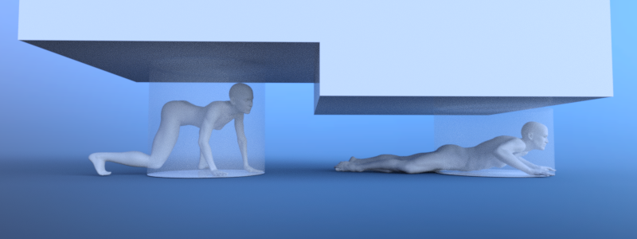

Hỗ trợ các kiểu di chuyển khác nhau cho actor

Để hỗ trợ các kiểu di chuyển khác nhau của actor như cúi người và bò, cần một cách thiết lập map tương tự như khi hỗ trợ Hỗ trợ các loại actor khác nhau.
Bake các navigation mesh khác nhau với chiều cao phù hợp cho actor đang cúi hoặc đang bò để chúng có thể tìm đường đi qua những đoạn hẹp đó trong thế giới game của bạn.
Khi một actor thay đổi trạng thái di chuyển, ví dụ đứng dậy, bắt đầu cúi người hoặc bò, hãy truy vấn đường đi trên map tương ứng.
Nếu hành vi avoidance cũng cần thay đổi theo kiểu di chuyển, ví dụ chỉ tránh khi đang đứng hoặc chỉ tránh các agent khác có cùng trạng thái di chuyển, hãy chuyển avoidance agent của actor sang một avoidance map khác mỗi khi kiểu di chuyển thay đổi.
func update_path():
if actor_standing:
path = NavigationServer3D.map_get_path(standing_navigation_map_rid, start_position, target_position, true)
elif actor_crouching:
path = NavigationServer3D.map_get_path(crouched_navigation_map_rid, start_position, target_position, true)
elif actor_crawling:
path = NavigationServer3D.map_get_path(crawling_navigation_map_rid, start_position, target_position, true)
func change_agent_avoidance_state():
if actor_standing:
NavigationServer3D.agent_set_map(avoidance_agent_rid, standing_navigation_map_rid)
elif actor_crouching:
NavigationServer3D.agent_set_map(avoidance_agent_rid, crouched_navigation_map_rid)
elif actor_crawling:
NavigationServer3D.agent_set_map(avoidance_agent_rid, crawling_navigation_map_rid)
private void UpdatePath()
{
if (_actorStanding)
{
_path = NavigationServer3D.MapGetPath(_standingNavigationMapRid, _startPosition, _targetPosition, true);
}
else if (_actorCrouching)
{
_path = NavigationServer3D.MapGetPath(_crouchedNavigationMapRid, _startPosition, _targetPosition, true);
}
else if (_actorCrawling)
{
_path = NavigationServer3D.MapGetPath(_crawlingNavigationMapRid, _startPosition, _targetPosition, true);
}
}
private void ChangeAgentAvoidanceState()
{
if (_actorStanding)
{
NavigationServer3D.AgentSetMap(_avoidanceAgentRid, _standingNavigationMapRid);
}
else if (_actorCrouching)
{
NavigationServer3D.AgentSetMap(_avoidanceAgentRid, _crouchedNavigationMapRid);
}
else if (_actorCrawling)
{
NavigationServer3D.AgentSetMap(_avoidanceAgentRid, _crawlingNavigationMapRid);
}
}
Ghi chú
Mặc dù truy vấn đường đi có thể được thực hiện ngay lập tức cho nhiều map, việc chuyển map của avoidance agent chỉ có hiệu lực sau lần đồng bộ server tiếp theo.